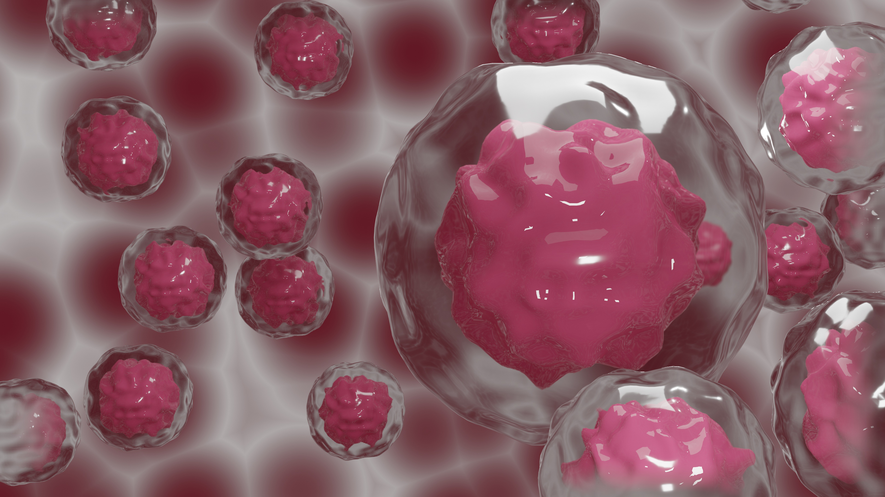

Mitose é um ciclo natural de duplicação celular, que ocorre com as células animais.
Mitose é um ciclo natural de duplicação celular, que ocorre com as células animais.
Mitosis (/maɪˈtoʊsɪs/) is a part of the cell cycle in which replicated chromosomes are separated into two new nuclei. Cell division by mitosis is an equational division which gives rise to genetically identical cells in which the total number of chromosomes is maintained.[1] Mitosis is preceded by the S phase of interphase (during which DNA replication occurs) and is followed by telophase and cytokinesis, which divide the cytoplasm, organelles, and cell membrane of one cell into two new cells containing roughly equal shares of these cellular components.[2] The different stages of mitosis altogether define the mitotic phase (M phase) of a cell cycle—the division of the mother cell into two daughter cells genetically identical to each other.[3]
